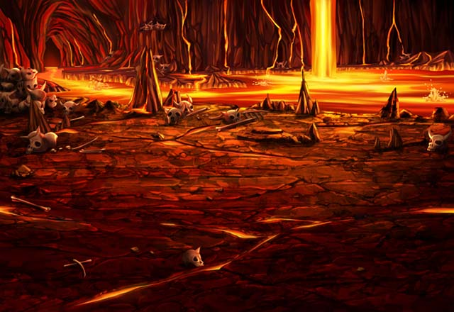

ルジーナ
こんなクソ暑い場所で 俺を待たせやがって。
ルジーナ
だったらそのクソ暑そうな鎧でも 脱ぎゃーいいじゃねーか。
カル
ランドール皇国のお２人さんも 見てるんだからさー。
パリス
ニーヨンのカルの評価は さらに上げないとね。
ティリス
うん！ いつも通りみんな仲良しで安心した♪
カル
Shou-chanも来たことだし、 そろそろ話を始めてもらえないか。
グラデンス
カルよ。 仲間同士の交流は大事じゃぞ。
グラデンス
フォッフォッフォッ。 相変わらず厳しいのー。
グラデンス
では、エリオール殿、 説明をお願いしてもよいかな。
エリオール
それでは、私から早速、説明させてもらう。
エリオール
簡潔に話すと アフラ・ディリス打倒に向けて
エリオール
ランドール皇国とアクラス召喚院は 同盟を結ぶことになったということだ。
ルジーナ
エリオールさんよ。 簡潔過ぎやしねーか？
ルジーナ
召喚老とインペリアルガードトップの話が そんな単純な訳、ねーだろーが。
ルジーナ
俺ら召喚院の召喚師ごときに 詳しい説明はいらねーって思ってんのか？
エリオール
アクラス召喚院の中でも優秀な君たちだ。
エリオール
少ない説明で十分に伝わると思ったのだが 私の買いかぶり過ぎだったかな？
ルジーナ
おい、パリス！ テメーの上司はなかなかステキな方だなー！
ルジーナ
俺の話への答え方、 お前もちっとは見習うんだな！
カル
これ以上挑発しても、この人からは 何も出そうにないぞ。
ルジーナ
さすがは最年少でインペリアルガードの 部隊長になるだけはあるな。
エリオール
魔討隊の面々から褒めてもらえるとは なかなか貴重な体験だな。
グラデンス
エリオール殿もそれくらいで よいじゃろう。
グラデンス
カル、セリア、ルジーナ、 そしてShou-chanよ。
グラデンス
お主たちはそれぞれ単独で アフラ・ディリスの居場所を調べるのじゃ。
エリオール
情報が入り次第、我々が部隊を率いて 道を切り開く。
エリオール
その後にアフラ・ディリスを倒すのは 我々でも君たちでも問題ない。
エリオール
四堕神最後の一柱である 真神アフラ・ディリスを倒し
エリオール
このグランガイアに 平和を取り戻すことだ！
エリオール
では、私は一度帝都に戻り、 出撃の最終準備を行ってくる。
エリオール
君はShou-chan召喚師の調査に 協力するように。
セリア
ちょっと、なんであんたが Shou-chanに同行するのよ！
エリオール
パリスには最速でアフラ・ディリス発見の 報告を私に届けて欲しいと思っていてね。
エリオール
四堕神を三柱も倒している Shou-chan召喚師こそ
エリオール
アフラ・ディリスを最初に発見する確率が もっとも高いと予想しているのだよ。
セリア
わかったわ……。 私も随分ナメられたものね。
セリア
Shou-chanとその女より先に 私があなたたちに報告してみせるわ。
カル
まぁ、Shou-chanと一緒なら 逆に変な動きも出来ないから安心だろ。
ティリス
Shou-chan！ もういいから早く一緒に出発しよう！
エリオール
女神様をお待たせさせてしまい 申し訳ございません。
エリオール
それでは、召喚師の方々。 君たちの活躍に期待しているよ。
ティリス
それじゃあ、Shou-chan！ しゅっぱ～～つ！！